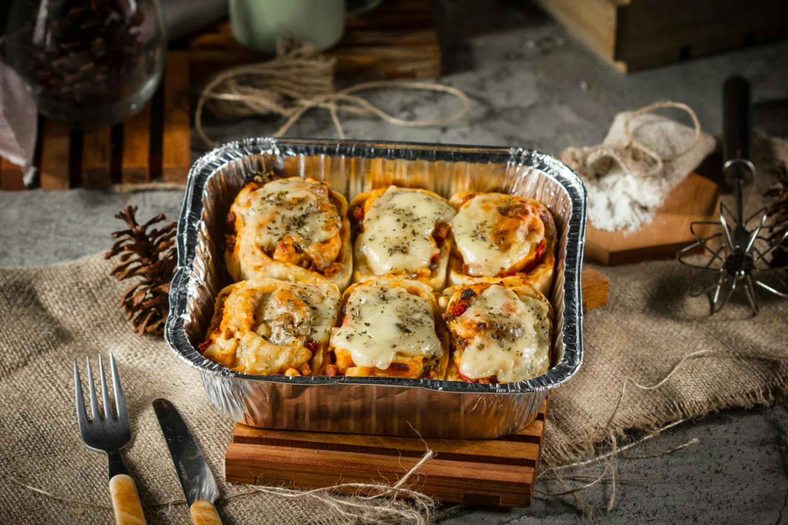

Homemade Lasagna

Foto de macarius draftStudio
This is my mom's special homemade lasagna recipe with a meaty,
made-from-scratch tomato sauce and a deliciously cheesy filling.
A more traditional homemade lasagna filling would be made with ricotta but
my mom's recipe calls for a blend of small-curd cottage cheese and
Parmesan.
Homemade Lasagna Ingredients
These are the ingredients you'll need to make this top-rated homemade
lasagna recipe:
-
Meat: (½ pound ground pork, ½ pound lean ground beef)
-
Onion:
A diced onion is cooked until translucent with the ground meat.
-
Canned tomatoes:
You'll need a can of tomato sauce and a can of crushed
tomatoes.
-
Sugar:
A dash of sugar balances out all of the acidity from the
tomatoes.
-
Spices and seasonings:
This homemade lasagna is seasoned with dried basil, dried oregano,
salt, and black pepper.
-
Noodles:
Of course, you'll need lasagna noodles! This recipe calls for
uncooked noodles, but you can use the oven-ready variety to save
time.
-
Cheese:
The cheese layer is made up of cottage cheese and Parmesan. You'll
also need shredded mozzarella.
-
Eggs:
Eggs make the cheese layer extra creamy. Plus, they act as a binding
agent (which means they hold the layer together).
How to Make Homemade Lasagna
Making homemade lasagna much easier than it looks. You'll find the full,
step-by-step recipe below — but here's a brief overview of what you can
expect:
-
Cook the meat: Cook the ground meat in a skillet until browned and
crumbly. Add the onion and continue cooking until it's translucent. Stir
in the canned tomato products, half of the parsley, garlic, basil, 1.5
teaspoons of salt, oregano, and sugar.
-
Cook the noodles: Boil the lasagna noodles in lightly salted water until
they're al dente.
-
Make the cheese layer: Mix cottage cheese, Parmesan cheese, eggs, the
remaining parsley, the remaining salt, and pepper in a bowl.
-
Assemble the lasagna: Layer the ingredients according to the recipe
(starting with sauce and ending with mozzarella) until the lasagna is
assembled.
-
Bake the lasagna: Cover with foil and bake in the preheated oven for
about half an hour. Remove the foil and continue baking until the top is
golden brown
How Long to Cook Lasagna
In an oven preheated to 375 degrees F, this homemade lasagna should be
perfectly baked in about 50 minutes (30-40 minutes covered, 5-10 minutes
uncovered).
Home